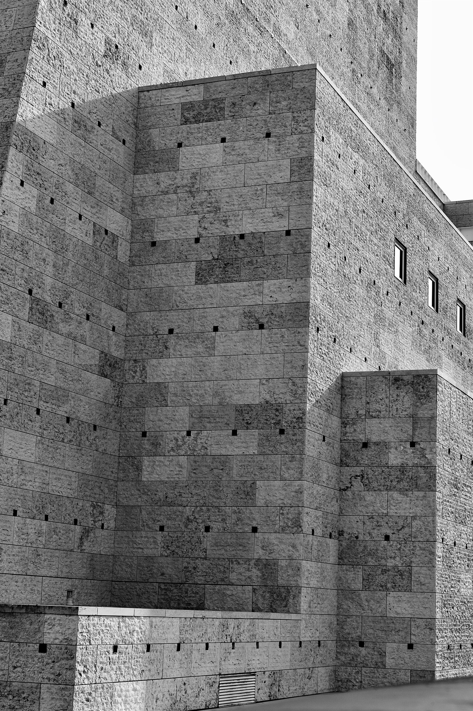
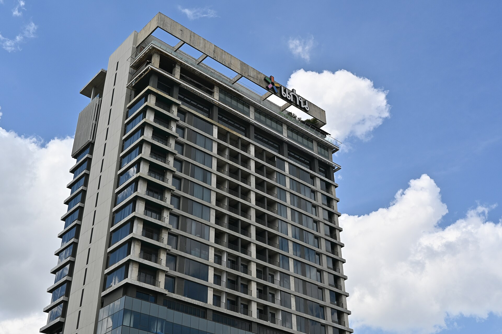

Casa Boiçucanga
Residencial — Fachada, Boiçucanga, SP
Arquitetura & Paisagem
Manifesto
Projetos
Residencial — Fachada, Boiçucanga, SP

Residencial — Jardim, Boiçucanga, SP

Interiores — Área Gourmet, Boiçucanga, SP

Institucional — Paraty, RJ

Residencial — Ubatuba, SP

Interiores — Suíte Master, Boiçucanga, SP

Comercial — Santos, SP

Interiores — Lavabo Social, Boiçucanga, SP
Escritório
O Caiçara Studio nasceu na Baixada Santista, entre o mar e a Serra do Mar, com uma convicção simples: a boa arquitetura escuta o lugar antes de desenhar sobre ele. Há mais de doze anos desenvolvemos projetos residenciais, comerciais e institucionais que unem o repertório do modernismo brasileiro à sabedoria construtiva das comunidades caiçaras — madeira, pedra, palha e concreto aparente convivendo com naturalidade.
Processo
Visitamos o terreno, ouvimos a história da família ou do negócio e mapeamos clima, vento e vegetação antes de qualquer traço.
Estudos volumétricos e de implantação que testam a relação entre cheios, vazios e paisagem em cada orientação solar.
Detalhamento executivo, especificação de materiais regionais e acompanhamento de estrutura, instalações e paisagismo.
Gestão de obra em campo, curadoria de fornecedores locais e entrega acompanhada até o último acabamento.
Contato
Conte um pouco sobre o terreno, o programa e o prazo. Respondemos em até dois dias úteis.